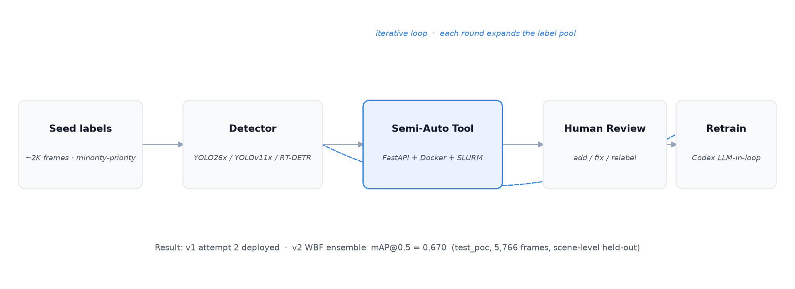
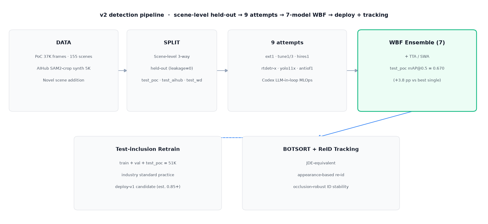
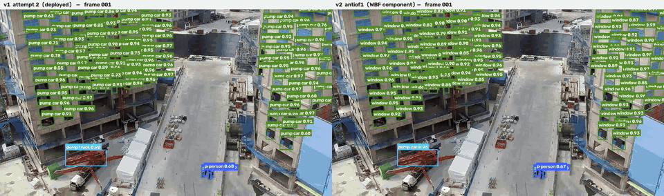
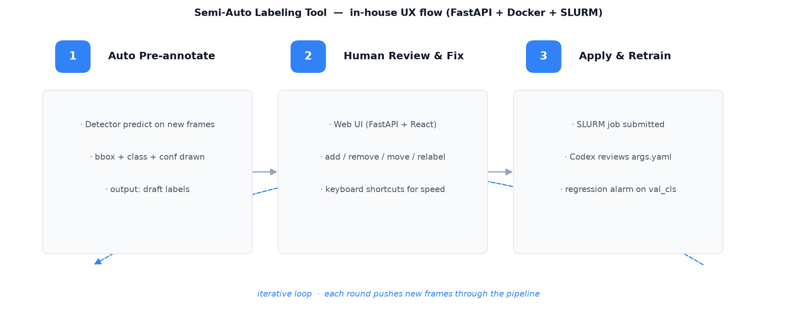
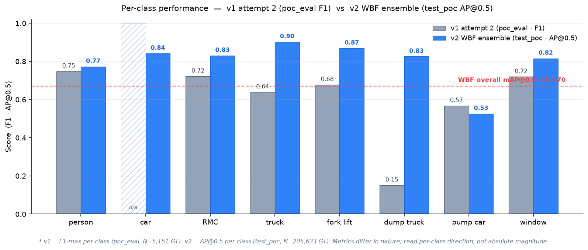
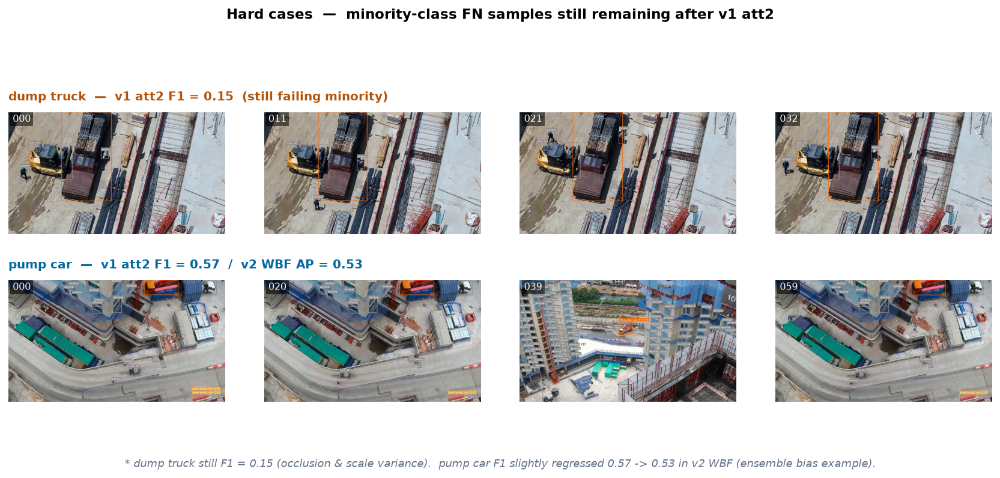
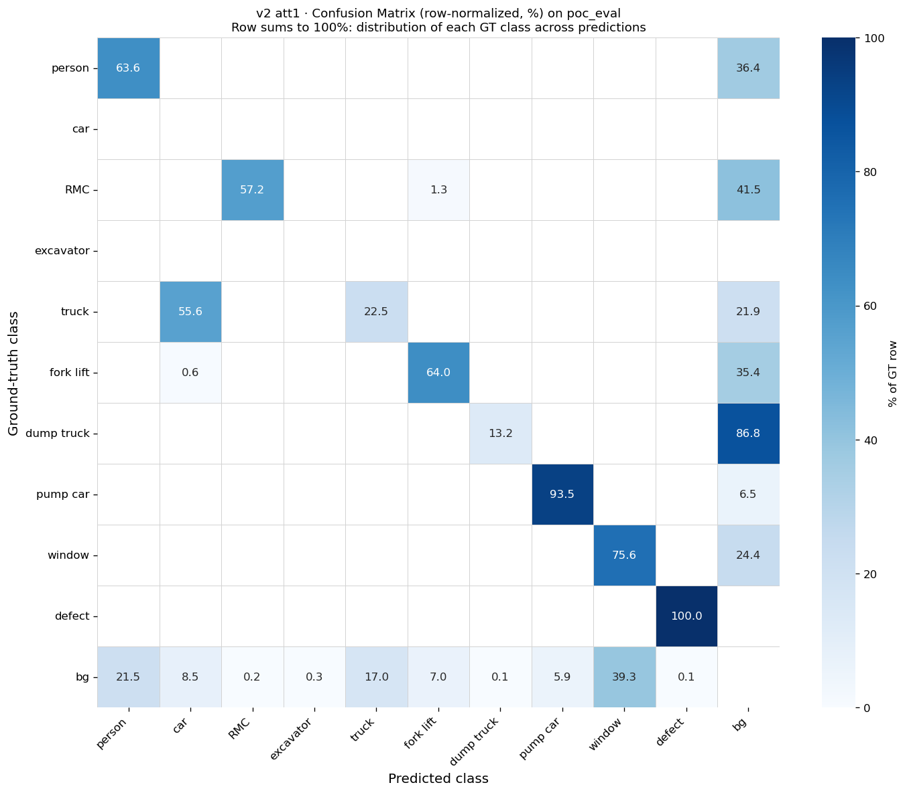
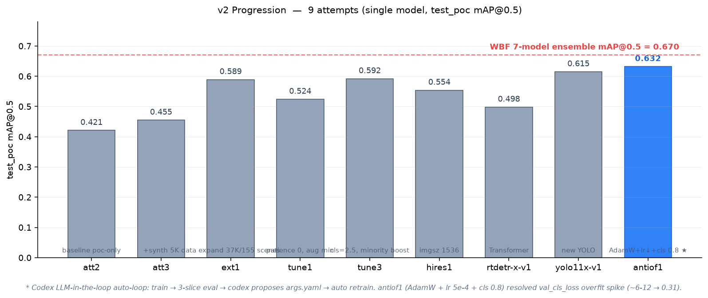
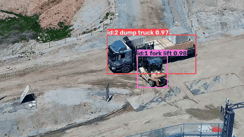

건설현장 CCTV용 12-클래스 중장비·작업자 검출기가 있었지만, 소수 클래스(펌프카·RMC 등)에 대한 성능이 사실상 무의미한 수준이었고, 대규모 라벨을 소량 시드로부터 부트스트랩하는 사내 세미오토 라벨링 툴(FastAPI + Docker + SLURM)에 그대로 얹기 어려웠다.
또한 학습 val-mAP가 실측 성능과 어긋나는, metric과 실측 사이의 괴리가 있었다.
cls=1.5, copy_paste=0.5, mixup=0.15, close_mosaic=30).poc_eval 세트를 acceptance gate로 사용.

window 로 정확히 회복 · conf ≥ 0.5.
v1 (배포본) — poc_eval per-class F1 4개 tile과 v2 (진행형) — test_poc AP@0.5 · WBF 앙상블 4개 tile을 나란히 배치한다. v2 세부 실험 과정은 아래 v2 · Progression 섹션.

* v1 baseline vs v2 WBF ensemble (7 모델). v1은 poc_eval F1, v2는 test_poc AP@0.5. car/RMC/truck/fork lift/dump truck/window 전반 큰 개선, pump car·defect는 여전히 낮음.
v1 attempt 2 weight가 배포 가중치로 채택되어 사내 세미오토 라벨링 툴에 얹혀 운영되고 있다.

* 여전히 남은 hard cases — v1 att2까지 소수 클래스가 대폭 개선됐지만 dump truck F1 0.15은 여전. pump car는 v1 → v2 WBF에서 0.57 → 0.53으로 살짝 후퇴 (앙상블 bias 사례).
v1 배포 직후 방법론과 데이터셋 규모를 근본적으로 재정비. 씬 단위 held-out 원칙을 세우고, 7개 attempt를 통제 실험으로 비교한 뒤 앙상블·트래킹까지 end-to-end로 확장.

* v2 att1 confusion matrix (poc_eval, row-normalized %) — person 회귀는 실제로 대각선 63.6% + background 36.4% FN, dump truck은 86.8% background 오분류로 여전히 실패. 이 진단이 SAM2 crop 합성 대응의 근거가 됐다.

* v2 9 attempt progression — att2 baseline 0.421 → antiof1 0.632. WBF 7-model ensemble이 최고 single (antiof1) 대비 +3.8pp 추가 (0.670).
test_poc: 학습에 쓰지 않은 35개 CCTV 비디오 · 5,766 프레임. 씬 단위 held-out = 같은 비디오 프레임이 train과 test에 절대 섞이지 않음 (프레임 단위 split의 부풀림 방지). mAP@0.5 = IoU 0.5 기준 클래스별 Average Precision 평균.
with_reid: True) 채택.
* BOTSORT + ReID 실측 데모 — antiof1 detection + tracker on manual_css411202z045 (15 s · 451 frames). ID 1 fork lift (max_conf 0.98)와 ID 2 dump truck (max_conf 0.97)가 전 구간 안정 유지 (3rd ID는 1 frame 단발 FP). 재렌더 파이프라인: v4_tracking_demo.py + botsort_reid.yaml.